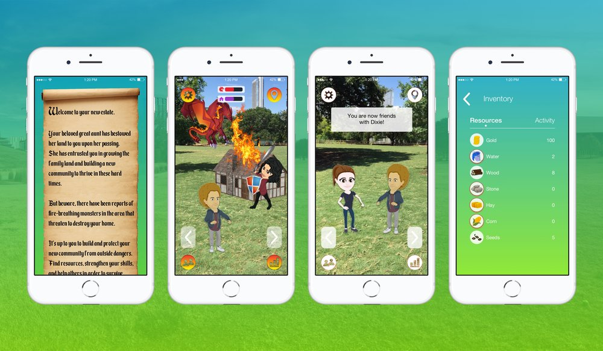
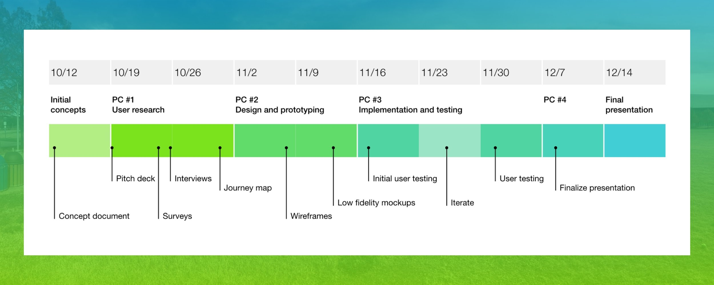

pARk
Augmented reality mobile game for building community engagement
We wanted to encourage individuals to interact and build community in public spaces. In order to do this we researched, designed, and prototyped an augmented reality game to be played at public parks.
Overview
- Team
- Bria Fowler, Researcher
- Eric Graham, Design Lead
- Serena Mistry, Designer
- Dixie Hamilton, Researcher
- Date
- August - December 2017
- Tools
- Adobe XD
- Adobe After Effects
- UserTesting.com
- Qualtrics
Purpose
For our Interaction Design class at the School of Information, we were tasked with identifying an interaction design-focused project to prototype. Because we are interested in submitting a project for the next CHI conference, we chose to focus on a project that would fit within the CHI Student Design Competition guidelines of "engaging communities".
Process
We used several types of research methods to better understand the factors involved in our concept including a survey, competitive analysis and literature review, however, the bulk of our work focused on design and testing. After determining our project concept, we used work sessions to sketch the basic game screens and flow. We turned our sketches into wireframes and created a prototype using transparency film to conduct guerrilla testing with users in a public park
We iterated to create medium fidelity mockups and conduct a second round of online user testing. Based on the feedback, we iterated again to create high fidelity mockups and conducted two final rounds of testing. We also filmed scenes for a video to showcase the prototype and user story.
Ideation
We used a few ideation sessions to brainstorm concepts focused on community engagement. The term “community” encompasses many things so we needed to narrow our focus. We used a few rounds of crazy-8 exercises to quickly generate ideas and posted our sketches on the whiteboard to vote on elements we liked. After voting, our team decided to create an augmented reality game to help bring people together in public spaces.
- “It makes each game/round different and dynamic, and you have the opportunity to work together as a team”
- “They often give you opportunities to learn things about your friends or the people you play them with.”
- “[I enjoy] Playing with other people in the same room, locally. If it's online and I'm playing with friends that's fun too, but playing by myself online doesn't have the same benefit as playing with others locally”
- “I enjoy communicating with others and sharing experiences”
Our Processs
We started the ideation process with two rounds of "Crazy 8's" sketching based on the topic of "community". We placed the second round of sketches on the white board and voted on our favorite concepts. After voting, we had a consensus on creating an app for multi-player augmented reality games in public spaces. As a group, we sketched out the high-level game concept and user flow, then Serena Mistry created the wireframes. I combined the printed wireframes with transparency film to create a low-fidelity prototype of an augmented reality smartphone game.
Our Designs
We started the ideation process with two rounds of "Crazy 8's" sketching based on the topic of "community". We placed the second round of sketches on the white board and voted on our favorite concepts. After voting, we had a consensus on creating an app for multi-player augmented reality games in public spaces. As a group, we sketched out the high-level game concept and user flow, then Serena Mistry created the wireframes. I combined the printed wireframes with transparency film to create a low-fidelity prototype of an augmented reality smartphone game.
User Testing
We started the ideation process with two rounds of "Crazy 8's" sketching based on the topic of "community". We placed the second round of sketches on the white board and voted on our favorite concepts. After voting, we had a consensus on creating an app for multi-player augmented reality games in public spaces. As a group, we sketched out the high-level game concept and user flow, then Serena Mistry created the wireframes. I combined the printed wireframes with transparency film to create a low-fidelity prototype of an augmented reality smartphone game.
High Fidelity
We incorporated the feedback from testing and worked out more detailed decisions for each interaction, which proved challenging, as a missed interaction could unbalance the entire game flow. We developed the high fidelity mockups in Sketch and created a prototype in Invision (see below). We kept many interactions simple due to the limitations of Invision and purposes of the user testing.
Deliverables
To showcase our prototype and demonstrate the user story, we put together a video. We met to film scenes at a park in Austin and created the final video in Adobe After Effects.
Final Report
You can view and download our final report here.